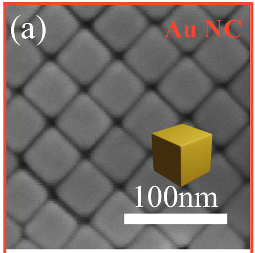
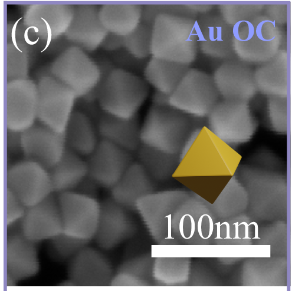

Inside a nanoparticle
Why would the shape of a gold particle change the chemistry on its surface?
The paper
Kang et al. made gold particles about 60 nanometres across in three shapes, each covered by a different crystal face, and used them to turn CO₂ into CO. In the dark, the face mattered most. When light excited the particles, the authors conclude that edges and corners took over as the main reaction sites.
What you’re looking at
Two of their electron micrographs: cubes with square {100} faces (Figure 1a) and octahedra with triangular {111} faces (Figure 1c). The 3D model that follows is an ideal gold crystal with both kinds of face, one sphere per atom. It is far smaller than the real particles and is not reconstructed from the images.
What to look for
In this model an atom inside has 12 nearest neighbours. At the surface it has fewer: 9 on a triangular face, 8 on a square face, 7 on an edge, 5 at a corner. The tabs let you compare faces, count neighbours, grow the particle and find where a molecule could sit. The model counts geometry; it does not compute chemistry.


Kang et al. · Figure 1a, c · Nature Communications, 2024 ↗
CC BY 4.0 · cropped panels
The live 3D view is unavailable. Explore the same model counts and explanations below.
TWO SURFACE PATTERNS
A square terrace
Look along this {100} face: the atoms form a square grid. Turn the particle to see how the terrace meets its neighbors.
Choose a terrace
Inspect an atom
neighbors
362 surface atoms / 923 total
Fixed spatial scale · complete-shell comparisons
Place a geometric marker
Connect to catalytic chemistry
Published COOH* formation energies
Bars run from 0 to 1.6 eV. Shorter is a smaller formation energy: a less uphill step.
Kang et al., 2024 · DFT calculations. These are formation energies, not activation barriers or predictions from this explorer. A neighbor count alone cannot rank catalytic activity.
Calculation context & source ↗Source & scientific model
One ideal particle,
two kinds of terrace
Our gold cuboctahedron is generated from an FCC lattice. The model uses a = 4.08 Å and whole atomic shells. It combines six {100} and eight {111} faces. It is an explanatory model, not a reconstruction of the photographed particles or their size.
Neighbors are calculated from coordinates. Lines connect nearest neighbors; they do not represent individual covalent bonds. Hiding atoms changes visibility, never the scientific count. A surface atom has fewer than 12 nearest neighbors in this unrelaxed model.
Geometry opens a question
Atop, bridge and hollow markers locate possible adsorption positions. The marker is a geometric probe, not a molecule, calculated path or identified active site. Chemistry also depends on electronic structure, adsorbate, potential and environment.
The paper’s slab calculations use VASP / PAW / PBE, four-layer 4 × 2 surfaces (128 atoms), 30 Å vacuum and a 450 eV cutoff. Reaction free energies include zero-point and entropy corrections at 298.15 K. See the paper’s DFT Calculation section and Figure S10. Plasmonic excitation and quantitative activity prediction are outside this explorer.
Kang et al. · Effect of crystal facets in plasmonic catalysis ↗
Figure 1a, c © the authors 2024, CC BY 4.0. Complete panels cropped losslessly; animated outlines added separately.
Model assumptions & claim ledger · Full original figure · Independent ASE reference
1Surfaces1 of 2
A square terrace
Look along this {100} face: the atoms form a square grid. Turn the particle to see how the terrace meets its neighbors.
Choose a terrace
An ideal gold crystal, one sphere per atom: far smaller than the real particles, and not reconstructed from the images.
1Surfaces2 of 2
A triangular terrace
On this {111} face, the atoms form a close-packed triangular pattern. The same crystal can expose both arrangements.
Choose a terrace
An ideal gold crystal, one sphere per atom: far smaller than the real particles, and not reconstructed from the images.
2Neighbors1 of 4
A face atom has company
Neighbors on the terrace and underneath it surround this atom. The open side faces the outside: on a square face it keeps 8 of the 12 an atom inside has.
Inspect an atom
Neighbors are calculated from coordinates. Lines connect nearest neighbors; they do not represent individual covalent bonds.
2Neighbors2 of 4
At an edge, fewer neighbors
Two terraces meet. The local surroundings open out in more than one direction: an edge atom has 7 nearest neighbors.
Inspect an atom
Neighbors are calculated from coordinates. Lines connect nearest neighbors; they do not represent individual covalent bonds.
2Neighbors3 of 4
A corner opens further
Two square and two triangular faces meet at this corner. Only five neighbors remain.
Inspect an atom
Neighbors are calculated from coordinates. Lines connect nearest neighbors; they do not represent individual covalent bonds.
2Neighbors4 of 4
Inside, all twelve
This interior atom and its twelve nearest neighbors are buried inside the particle. The cut opens it; hidden atoms still count.
Hiding atoms changes visibility, never the scientific count.
3Size1 of 1
Small changes the balance
The outside grows with area; the interior grows with volume. Smaller particles put a larger share of their atoms at the surface.
Fixed spatial scale · complete-shell comparisons. The photographed particles are about 60 nanometres across.
4Binding1 of 2
Where a molecule could sit
Atop, bridge and hollow markers locate possible adsorption positions. The marker is a geometric probe, not a molecule, calculated path or identified active site.
Place a geometric marker
Chemistry also depends on electronic structure, adsorbate, potential and environment.
4Binding2 of 2
Two kinds of triangular hollow
On a triangular face three atoms surround each hollow. Under an FCC hollow the next layer has a gap; under an HCP hollow an atom lies directly beneath.
Place a geometric marker
Revealing the layers changes visibility only; the marker locates a position, not a molecule.